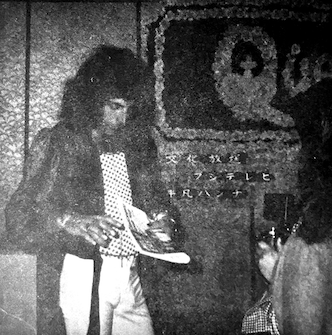
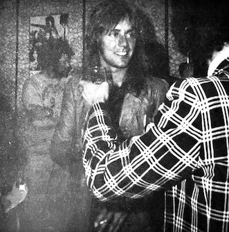
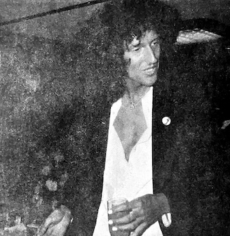
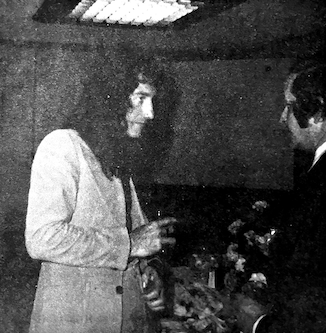

Impressions of Queen
Freddie Mercury

[Note: Freddie received a gag "Exorcist Award" in a Music Life magazine column in 1974 due to his ferocious perceived stage persona at the time. The Exorcist had just been released in Japan and was a big hit.]
Before coming to Japan, he received a certain "Exorcist Award" from a certain magazine, but in actuality he was an intelligent and beautiful young man with an intensely mysterious appearance. His style was dripping with grace and elegance and he fairly floated around with the attitude of a champion.
He's the most fashionable of all the members, and his costumes cut a fine figure even when he's offstage. One gets the feeling that he is casting pearls before swine, as he gives off the feeling of aristocratic nobility, but in a way that can be summed up in one word: COOL!
You never get a sense of sarcasm from him. We guess it could be said that if feels like he was raised to be genteel. Yes, offstage he is unexpectedly quiet, but onstage he is more animated [lit. violent] than you can imagine!
The people who claimed he was the "Exorcist of the Rock World" really ought to see him in person next time they come to Japan. In reality he is a very unique and attractive young man.
Roger Taylor

He's loved by all, having a good reputation with all related parties, and almost felt like their pet or something. Yes, he really is that cute.
His eyes are insanely huge, with long eyelashes coated in mascara, and they're always going round and round taking everything in, boiling over with great curiosity. The bodyguards assigned to him would agree with us and say, "He's really cute, yeah he's definitely the cute one," while side-eyeing him.
But he's not merely cute–he's unexpectedly put-together, and somehow he miraculously feels even more adult-like than Brian. That is, no matter what problem arose, he didn't lose his head, and we get the feeling there's never a time when he'll stop smiling.
Anyhow, he's so kind and cute, this sincere young man. (Voice from the shadows: These sentences are full of an awful lot of adverbs and adjectives, huh?)
Brian May

Brian was entirely as we expected. So kind, always paying attention to us...
His looks are even better in person than in photos, and we would even call him cute. And this guy! So eye-catching. He's SO tall, always wearing black suits... and then his hair is always unfurling in such a gorgeous manner.
Yep, it's said that that messy head is completely natural! Surprising, right?
He's quiet and docile offstage, but he seems a bit hard to please. Whenever we looked a bit bored, he'd peek at our faces and smile at us.
If we had to say one bad thing, it'd be that he's so difficult to please. But he was a totally nice guy who enjoys friendly conversation.
John Deacon

This guy has come and gone and we still aren't quite sure what kind of human he is.
We assume that it's partially because he's the kind of guy whose mood changes with the weather. When he was in a good mood he wouldn't stop grinning madly, and when he was in a bad mood he would completely ignore fans no matter what they said.
Maybe it's because he's not quite accustomed to being out in the world, so he has no skin?
But that doesn't mean he isn't bright with a good sense of humor. That's right, he seems to have a really good relationship with Brian, since when we were in Brian's room John just sauntered right in and said "Hello!" like it was nothing, standing there and staring intently at us. Their relationship felt good as though they were brothers, and the mood in the room was all smiles.
But is he an adult? Is he a child? We really couldn't tell—he was a refreshingly enigmatic person.